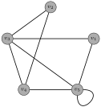
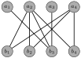

Chapter 10 Introduction to Graph Theory
Loosely speaking, a graph is a collection of points called vertices and connecting segments called edges, each of which starts at a vertex, ends at a vertex and contains no other vertices beside these. More formally, we define the term as follows. A
graph consists of two sets, a nonempty set
\(V\) of points called
vertices and a set
\(E\) whose elements, called
edges, are multisets of size two from
\(V\text{.}\)
Each edge is associated with either one vertex which serves as both endpoints or two vertices as its endpoints. Technically, each edge is a multiset of the form
\({\multiset{u,v}}\) where
\(u,v\in V\text{.}\) We say that
\(u\) and
\(v\) are
endpoints of the edge
\(\multiset{u,v}\text{.}\) In an abuse of notation, it is customary to write
\({\{u,v\}}\) even if
\(u=v\text{.}\) In fact, we may abbreviate further and denote the edge by
\({uv}\text{.}\) Note that the order in which the vertices of an edge are listed is irrelevant. That is,
\(\multiset{u,v}=\multiset{v,u}\text{,}\) \(\{u,v\}=\{v,u\}\text{,}\) and
\(uv=vu\text{.}\) If
\(G\) is the graph associated with the vertex set
\(V\) and edge set
\(E\text{,}\) we write
\({G=(V,E)}\text{.}\) It is worth pointing out that we assumed that
\(V\) is nonempty, but
\(E\) is allowed to be empty (i.e., the graph has no edges).
It is customary to represent a graph using visual representations, where each vertex is a dot and each edge is a connecting segment, not necessarily straight.
Example 10.1.
Here is an example of a graph with vertex set
\(V=\{v_1, v_2, v_3,v_4,v_5\}\text{.}\)

Problem 10.2.
Find at least five different graphs with vertex sets
\(V=\{a,b,c\}\text{.}\)
There is a lot of terminology associated to graphs! Here are some of the relevant concepts.
-
Vertices
\(u\) and
\(v\) of a graph are
adjacent if they are the endpoints of the same edge.
-
If
\(v\) is an endpoint of the edge
\(e\text{,}\) we say that
\(e\) is
incident to
\(v\text{.}\)
-
If an edge
\(e\) is incident to vertices
\(u\) and
\(v\text{,}\) we say that
\(u\) and
\(v\) are
connected by edge
\(e\text{.}\)
-
An edge
\(e\) that is incident to a single vertex (i.e.,
\(e=uu\) for some
\(u\in V\)) is called a
loop.
-
The
order of a graph is the number of vertices in the graph. That is, if
\(G=(V,E)\text{,}\) then the order of
\(G\) is
\(|V|\text{.}\)
-
The
degree of a vertex
\(v\text{,}\) written
\(\deg(v)\text{,}\) is the number of edges incident to
\(v\) (i.e., the number of edges that have
\(v\) as an endpoint). Note that a loop contributes 2 to a vertex’s degree, one for each of the two ends of the edge. The degree of a vertex
\(v\) is denoted
\({\deg(v)}\text{.}\)
Problem 10.3.
Discuss each of the concepts introduced above in the context of
Example 10.1.
Many graphs have similar properties that allow us to categorize them. Here are several families of graphs.
-
Complete Graphs. The
complete graph on
\(n\geq 1\) vertices, denoted
\({K_n}\text{,}\) is the graph of order
\(n\) such that each pair of vertices is connected by exactly one edge, and there are no other edges (i.e., no loops).
-
Cycle Graphs. The
cycle graph on
\(n\ge 3\) vertices, denoted
\({C_n}\text{,}\) is the graph such that when the
\(n\) vertices are suitably labeled
\(v_1, v_2, \dots, v_n\text{,}\) the edges of
\(C_n\) are
\(\{v_1,v_2\}, \{v_2,v_3\}, \dots, \{v_{n-1},v_n\}, \{v_n,v_1\}\text{.}\)
-
Path Graphs. The
path on
\(n\geq 1\) vertices, denoted
\({P_n}\text{,}\) has a description similar to
\(C_n\text{:}\) for distinct vertices suitably labeled
\(v_1, v_2, \dots, v_n\text{,}\) the edges of
\(P_n\) are
\(\{v_1,v_2\}, \{v_2,v_3\}, \dots, \{v_{n-1},v_n\}\text{.}\)
-
Wheel Graphs. The
wheel graph on
\(n \ge 4\) vertices, denoted
\({W_n}\text{,}\) is the graph
\(C_{n-1}\) together with one additional vertex that is connected to each of the vertices of
\(C_{n-1}\text{.}\)
-
Hypercube Graphs. The
hypercube of dimension
\(n\geq 1\text{,}\) denoted
\({Q_n}\text{,}\) is the graph whose vertices are labeled with the
\(2^n\) bit strings of length
\(n\) with an edge connecting two vertices if and only if their labels differ in exactly one bit.
Problem 10.4.
Draw the first few graphs of each of the graph families above.
Problem 10.5.
How many edges do each of the following have?
-
-
-
-
-
A
simple graph is a graph in which each edge connects two distinct vertices and each pair of vertices is connected by at most one edge. Note that the graphs
\(K_n, C_n, P_n, W_n\text{,}\) and
\(Q_n\) are all simple graphs. A
pseudograph (or
multigraph) is like a graph but we allow
multiple edges between a pair of vertices (i.e.,
\(E\) is a multiset instead of a set).
Problem 10.6.
Draw examples of simple graphs, non-simple graphs, and psuedographs on 3 vertices.
A simple graph
\(G = (V,E)\) is
bipartite if there is a partition of
\(V\) into two nonempty sets
\(V_1,V_2\) (i.e.,
\(V_1\neq \emptyset\text{,}\) \(V_2\neq \emptyset\text{,}\) \(V_1\cap V_2=\emptyset\text{,}\) and
\(V_1 \cup V_2 = V\)) such that each edge of
\(G\) connects a vertex in
\(V_1\) and a vertex in
\(V_2\text{.}\) The pair
\((V_1,V_2)\) is called a
bipartition of the graph.
Problem 10.7.
Provide an example of a bipartite graph with 5 vertices.
The following theorem provides a nice characterization of bipartite graphs.
Theorem 10.8.
A graph is bipartite if each vertex can be colored with one of two colors so that each pair of adjacent vertices have different colors.
Problem 10.9.
Which complete graphs are bipartite?
Problem 10.10.
Which path graphs are bipartite?
Problem 10.11.
Which cycle graphs are bipartite?
Problem 10.12.
A bipartite graph with bipartition
\((V_1,V_2)\) such that
\(|V_1|=m\) and
\(|V_2|=n\) is the
complete bipartite graph \(K_{m,n}\) if it contains each edge
\(\{u,v\}\) for every pair
\(u \in V_1\) and
\(v \in V_2\text{.}\) Note that
\(K_{m,n}=K_{n,m}\text{.}\)
Problem 10.13.
Draw
\(K_{1,1}\text{,}\) \(K_{1,2}\text{,}\) \(K_{2,2}\text{,}\) \(K_{2,3}\text{,}\) \(K_{3,3}\text{.}\)
The next result is sometimes referred to as the
Handshake Lemma. Do you see why?
Theorem 10.14. Degree Sum Formula.
In any graph, the sum of the degrees of vertices in the graph is always twice the number of edges. In other words, in a graph \(G = (V,E)\text{,}\)
\begin{equation*}
2|E| = \sum_{v \in V} \deg(v)\text{.}
\end{equation*}
Problem 10.15.
At a recent party, 9 people greeted each other by shaking hands. Is it possible that each person shook hands with exactly 7 people at the party?
Sometimes it is convenient to use the term
even vertex or
odd vertex to refer to a vertex whose degree is even or odd, respectively.
Problem 10.16.
Explain why every graph has an even number of odd vertices.
The
degree sequence of a graph is the list of the degrees of the vertices of the graph in descending order. A finite list of nonnegative integers in descending order is
graphic if it is the degree sequence of a simple graph.
Problem 10.17.
Find the degree sequences for
\(K_n\) (
\(n\geq 1\)),
\(C_n\) (
\(n\geq 3\)),
\(P_n\) (
\(n\geq 1\)),
\(W_n\) (
\(n\geq 4\)), and
\(Q_n\) (
\(n\geq 1\)).
Problem 10.18.
Which of the following are graphic sequences?
-
-
-
Problem 10.19.
Find two different graphs that have 32222111 as their degree sequence.
Theorem 10.20.
If
\(d_1d_2\cdots d_n\) is the degree sequence for a graph
\(G\) of order
\(n\text{,}\) then
\(\sum_{i=1}^n d_i\) must be even.
One consequence of the previous theorem is that any sequence with an odd sum (e.g., 331) is not graphic. It turns out that if a sequence has an even sum, it is the degree sequence of a multigraph. The construction of such a graph is straightforward: connect vertices with odd degrees in pairs, and fill out the remaining even degree counts by self-loops. The question of whether a given degree sequence can be realized by a simple graph is more challenging. This problem is also called
graph realization problem and can be solved by either the Erdös–Gallai theorem or the Havel–Hakimi algorithm. Unfortunately, this is beyond the scope of this course.
We will now focus on making new graphs from old. Below are several definitions.
-
A graph
\(H=(V_H,E_H)\) is a
subgraph of a graph
\(G=(V_G,E_G)\) if
\(V_H\subseteq V_G\) and
\(E_H\subseteq E_G\) (i.e., the vertices of
\(H\) are vertices of
\(G\) and the edges of
\(H\) are edges of
\(G\)). If
\(H\) is a subgraph of
\(G\text{,}\) we may write
\({H\subseteq G}\text{.}\)
-
A graph
\(H=(V_H,E_H)\) is an
induced subgraph of a graph
\(G=(V_G,E_G)\) if
\(V_H\subseteq V_G\) and
\(E_H\) consists of all of the edges in
\(E_G\) that have both endpoints in
\(E_H\text{.}\) That is, for any two vertices
\(u,v\in V_H\text{,}\) \(u\) and
\(v\) are adjacent in
\(H\) if and only if
\(u\) and
\(v\) are adjacent in
\(G\text{.}\)
-
If
\(G=(V,E)\) is a graph and
\(S\subseteq V\text{,}\) then the
subgraph of \(G\) induced by \(S\), denoted
\({G[S]}\text{,}\) is the induced subgraph of
\(G\) with vertex set
\(S\text{.}\)
-
The
union of two graphs
\(G_1 = (V_1,E_1)\) and
\(G_2 = (V_2,E_2)\) is the graph with vertex set
\(V = V_1\cup V_2\) and edge set
\(E = E_1 \cup E_2\text{.}\)
-
The
complement of a
simple graph
\(G\) of order
\(n\) is the graph
\({\overline{G}}\) on the same
\(n\) vertices such for each pair of distinct vertices
\(u\) and
\(v\text{,}\) \(\{u,v\}\) is an edge of
\(\overline{G}\) if and only if it is not an edge of
\(G\text{.}\)
Problem 10.21.
Consider the graph \(C_4\text{.}\) Label the vertices clockwise as \(a\text{,}\) \(b\text{,}\) \(c\text{,}\) and \(d\text{.}\)
-
Find all induced subgraphs of
\(C_4\text{.}\)
-
Find a subgraph of
\(C_4\) that is not an induced subgraph of
\(C_4\text{.}\)
Problem 10.22.
Make up a few examples to explore the concepts of union and complement of graphs.
Problem 10.23.
Determine whether each of the following statements is true or false. If a statement is true, prove it. Otherwise, provide a counterexample.
-
Any subgraph of a complete graph is also complete.
-
Any induced subgraph of a complete graph is also complete.
-
Any subgraph of a bipartite graph is bipartite.
If
\(G=(V,E)\) is a graph and
\(S\subseteq V\text{,}\) the
neighborhood of
\(S\text{,}\) denoted
\({N(S)}\) is the set of all vertices in
\(V\) adjacent to at least one member of
\(S\text{.}\) Of course, we can consider the neighborhood of a single vertex
\(v\text{,}\) which is denoted
\({N(v)}\text{.}\) A neighborhood of a single vertex does not include itself, and is more specifically the
open neighborhood of
\(v\text{.}\) It is also possible to define a neighborhood in which
\(v\) itself is also included. This is called the
closed neighborhood of
\(v\text{,}\) sometimes denoted by
\({N[v]}\text{.}\) Unless stated otherwise, a neighborhood is assumed to be open.
Problem 10.24.
Make up a few examples of graphs and explore the concept of neighborhood.
Problem 10.25.
Consider the graph \(K_{3,5}\) with bipartition \(V_1\) and \(V_2\text{,}\) where \(|V_1|=3\) and \(|V_2|=5\text{.}\)
-
For
\(v\in V_1\text{,}\) what is
\(N(v)\text{?}\)
-
What is
\(N(V_1)\text{?}\)
-
What is
\(N(V_2)\text{?}\)
A
matching (or
independent edge set) in a graph
\(G=(V,E)\) is a subset of edges
\(M\subseteq E\) without common vertices. That is, a subset of the edges is a matching if each vertex appears as an endpoint in at most one edge of that matching. If
\(M\) is a matching, a vertex is said to be
matched if it is an endpoint of one of the edges in
\(M\text{.}\) Otherwise, the vertex is called
unmatched. We say that
\(M\) covers a subset
\(S\subseteq V\) if every vertex of
\(S\) is matched by
\(M\text{.}\)
We now explore a type of matching problem. Suppose we have a bipartite graph
\(G=(V,E)\) with a bipartition
\((V_1,V_2)\text{.}\) We want to match up each element
\(v_1\in V_1\) with exactly one element
\(v_2 \in V_2\) that is adjacent to it in
\(G\) and that is not matched to any other element of
\(V_1\text{.}\)
A
total matching from
\(V_1\) to
\(V_2\) is matching that covers
\(V_1\text{.}\) In other words, for each
\(v_1\in V_1\text{,}\) there is a unique edge
\(m\in M\) and a unique
\(v_2\in V_2\) such that
\(m\) is incident to
\(v_1\) and
\(v_2\text{.}\) We can think of
\(M\) as specifying an injective function from
\(V_1\) to
\(V_2\text{.}\) If every vertex in
\(V_2\) is also matched (i.e.,
\(V_2\) is covered), then the matching is called a
perfect matching.
Finding a matching in a bipartite graph can be treated as a network flow problem.
Problem 10.26.
Consider the bipartite graph
\(G\) given below. Is there a total matching from
\(\{a_1,a_2,a_3,a_4\}\) to
\(\{b_1,b_2,b_3,b_4,b_5\}\text{?}\) If so, find one. If not, explain why.
Problem 10.27.
Consider the bipartite graph
\(G\) given below. Is there a total matching from
\(\{a_1,a_2,a_3,a_4\}\) to
\(\{b_1,b_2,b_3,b_4\}\text{?}\) If so, find one. If not, explain why.

Problem 10.28.
Determine whether each of the following statements is true or false. If a statement is true, prove it. Otherwise, provide a counterexample.
-
If a bipartite graph
\(G=(V,E)\) has a perfect matching, then
\(|V|\) is even.
-
If
\(G=(V,E)\) is a bipartite graph such that
\(|V|\) is even, then
\(G\) has a perfect matching.
In order for there to be a total matching from
\(V_1\) to
\(V_2\text{,}\) we need
\(\deg(v_1)>0\) for each
\(v_1\in V_1\text{.}\) However, that is not enough.
Phillip Hall (1904–1982) discovered the following condition, known as
Hall’s Marriage Theorem, needed for a total matching.
Theorem 10.29. Hall’s Marriage Theorem.
A bipartite graph with bipartition
\((V_1,V_2)\) has a total matching from
\(V_1\) to
\(V_2\) if and only if
\(|N(S)| \ge |S|\) for all subsets
\(S\subseteq V_1\text{.}\) In other words, every subset
\(S\) of
\(V_1\) must have sufficiently many neighbors in
\(V_2\text{.}\)
Hall actually stated and proved a more general theorem, but we have given its formulation in the context of graph theory.
A graph
\(G=(V,E)\) is called
\(k\)-regular if
\(\deg(v)=k\) for every
\(v\in V\text{.}\)
Example 10.30.
The cycle graph
\(C_n\) is 2-regular, the complete graph
\(K_n\) is
\((n-1)\)-regular, the hypercube graph
\(Q_n\) is
\(n\)-regular, and the complete bipartite graph
\(K_{n,n}\) is
\(n\)-regular.
Problem 10.31.
Prove that if
\(G\) is a
\(k\)-regular bipartite graph with bipartition
\((V_1,V_2)\text{,}\) then
\(|V_1|=|V_2|\text{.}\)
Problem 10.32.
Prove that if
\(G\) is a
\(k\)-regular bipartite graph with
\(k>1\text{,}\) then
\(G\) has a perfect matching.